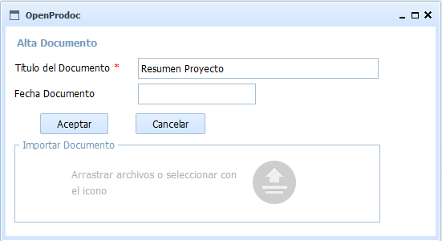
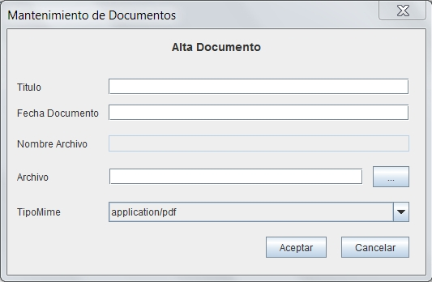

Este formulario permite añadir documentos al repositorio introduciendo los metadatos comunes y básicos. No permite elegir el tipo documental, que no podrá cambiarse posteriormente, de forma que solo debe usarse cuando el documento es de tipo genérico.
El documento se añade en la carpeta actual y hereda el ACL de la carpeta actual.
El usuario debe tener permisos de escritura sobre la carpeta actual, en otro caso no podrá insertar documentos.
Debe introducirse la información siguiente:
En la versión Web, después de rellenar los campos debe pulsarse [Aceptar]y entonces, cuando el control de subida de archivos esté activo, arrastrar o seleccionar un archivo.

En la versión Swing, se debe cumplimentar los campos, incluyendo el archivo elegido y pulsar [Aceptar].

Los campos obligatorios para cada tipo documental apareceran resaltados. Al situarse el cursor o ratón sobre cada campo, aparecerá un mensaje emergente o un texto en la banda de inferior del formulario con información sobre el campo y (en el caso de los campos de tipo fecha u hora) el formato esperado. Los campos de tipo fecha/hora deben ser valores válidos y seguir el formato esperado, en otro caso el campo se limpia y el valor se rechaza.
En caso de producirse un error (carencia de permisos del usuario, error de comunicaciones, fecha incorrecta, etc), la operación se cancela y se comunicará al usuario el motivo del error.